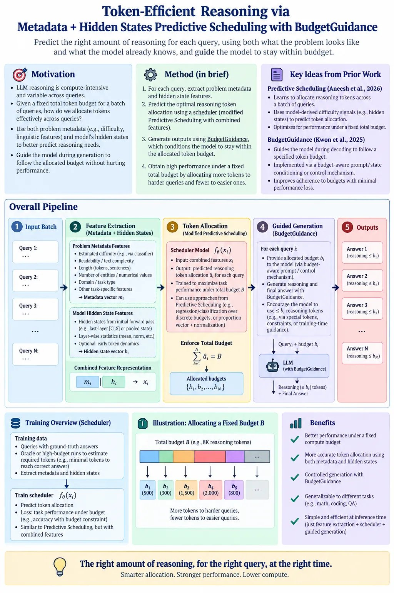
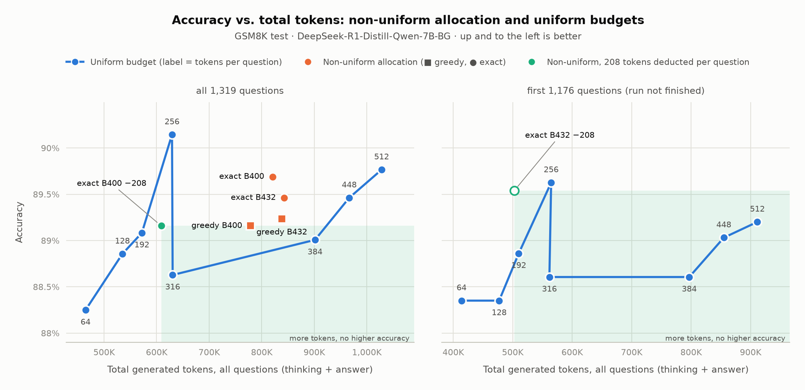
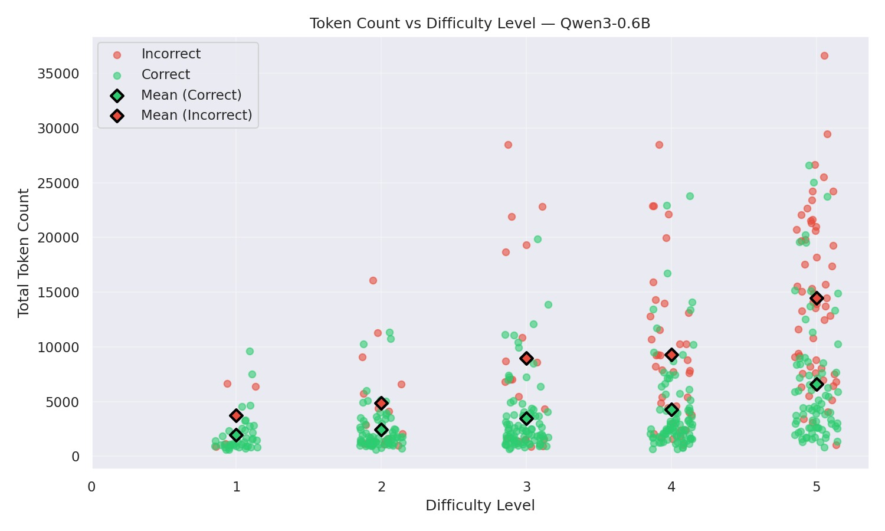
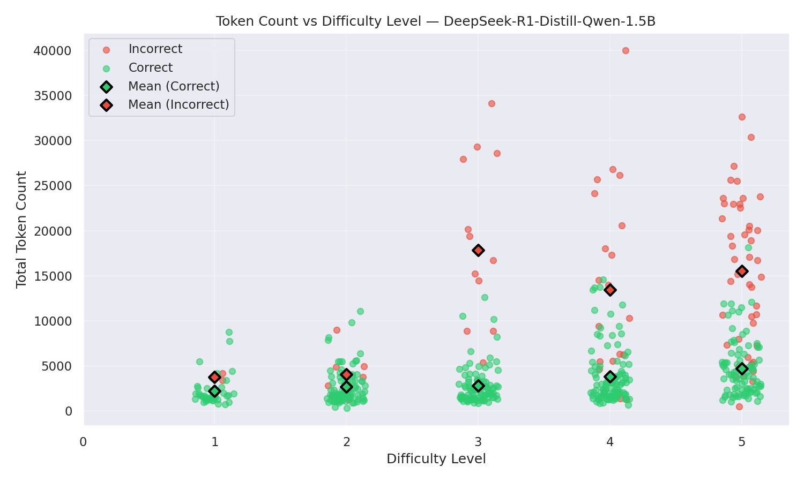
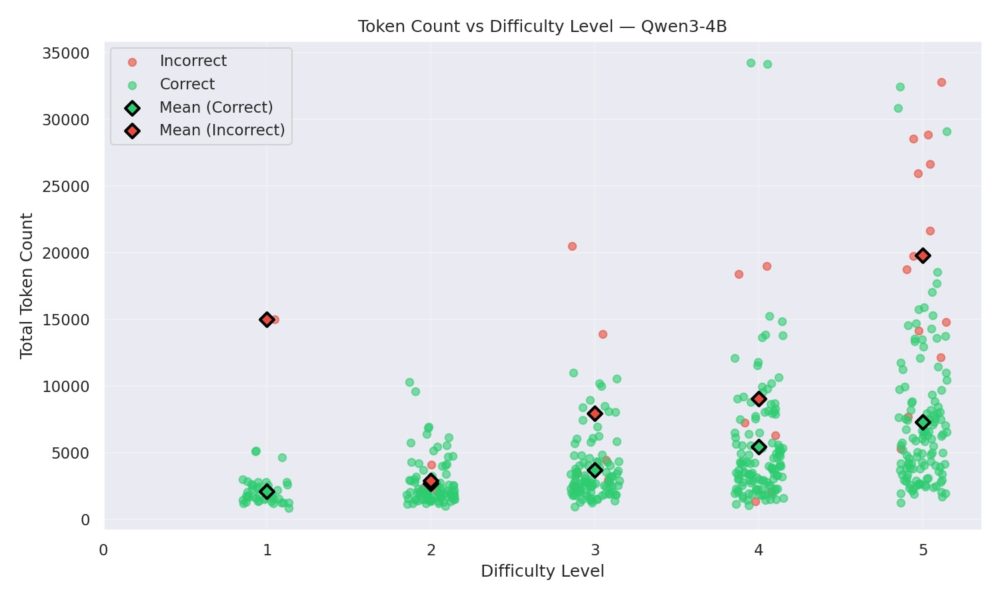
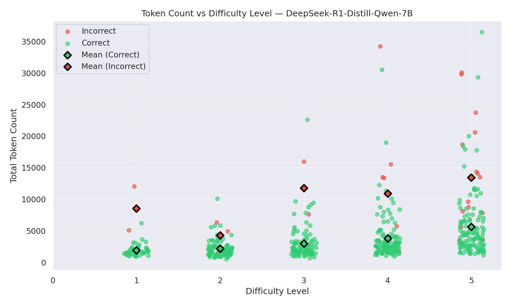

One fixed budget per query wastes tokens
Reasoning models think for thousands of tokens on every query. A fixed per-query cap over-spends on easy questions and cuts hard ones short. When a batch shares a compute or energy budget, the real question is how to divide it.
Allocate
Given a total budget B for a batch of N queries, how many reasoning tokens should each query get?
Predict
Can we estimate needed length before generating, from problem metadata and the model's own hidden states?
Obey
Once a query has budget bᵢ, can the model finish its reasoning within it, without being cut off mid-thought?
Proposed Method
- Take the batch. Queries q₁ … q_N arrive with one shared token budget B for the whole batch.
- Extract features. For each query, build a metadata vector mᵢ (estimated difficulty, length, readability, count of numbers and entities, domain) and take a pooled mid-layer hidden state hᵢ from one forward pass. Concatenate them: xᵢ = [mᵢ ‖ hᵢ].
- Predict each query's need. A small scheduler f_θ(xᵢ) predicts the reasoning length âᵢ the query needs. This follows Predictive Scheduling, with metadata added to the hidden-state input.
- Split the batch budget. Turn the predictions into per-query budgets bᵢ with Σ bᵢ = B, by a greedy allocator or an exact solver. Harder queries get more tokens, easier ones fewer.
- Generate within each budget. Run every query with Budget Guidance set to its bᵢ. A Gamma-distribution predictor of remaining thinking length steers decoding so the model wraps up its reasoning on time instead of being cut off.
- Train the scheduler. Run training queries at several budgets, label each with the smallest budget that still gives the correct answer, and fit f_θ on xᵢ to those labels.
Show full method overview figure

Non-uniform allocation vs uniform budgets
Accuracy against total generated tokens on the GSM8K test set with DeepSeek-R1-Distill-Qwen-7B under Budget Guidance. The blue line gives every question the same budget; orange points split the budget non-uniformly across questions (greedy or exact allocation); green points are non-uniform runs with 208 tokens deducted per question. Up and to the left is better.

Same accuracy, fewer tokens. Exact B400 reaches about 89.7% with about 820K tokens. Uniform needs 512 tokens per question (about 1.03M) to get there, so exact allocation uses roughly 20% fewer tokens.
Exact beats greedy. At the same budget, exact allocation is about 0.3–0.5 pp above greedy (B400: ≈89.7% vs ≈89.15%; B432: ≈89.5% vs ≈89.2%).
Deduction moves points left. With 208 tokens deducted per question, exact B432 reaches ≈89.5% at ≈505K tokens on the partial run, close to uniform 256 (≈89.6% at ≈565K) with about 10% fewer tokens.
Uniform is not monotonic. Uniform 256 hits ≈90.1%, then 316 and 384 drop to ≈88.6–89.0%. Extra uniform tokens past 256 do not reliably buy accuracy.
Values read off the plot and approximate. The right panel is a partial run.
Reasoning length grows with difficulty, and wrong answers run long
Total tokens per response against problem difficulty (levels 1–5) for four reasoning models. Green points are correct answers, red are incorrect; diamonds mark the means.
Need scales with difficulty. Mean length of correct answers rises from about 2k tokens at level 1 to about 5–7k at level 5 in every model. A per-query budget has something real to predict.
Incorrect answers are 2–6× longer. For R1-Distill-1.5B at level 3, wrong answers average about 18k tokens against about 3k for right ones. Many of these tokens buy nothing.
Difficulty alone is not enough. Spread within a level is wide (≈1k to 30k+), so a level label is a weak predictor. This motivates adding hidden-state features.
Scale changes the error profile. Qwen3-0.6B fails often at levels 4–5; Qwen3-4B fails rarely. The same budget means different things for different models.
Values above are read off the plots and are approximate.




Tokens, accuracy and energy on DeepSeek-R1-Distill-Qwen-1.5B
Ten configurations compared against the unconstrained base model. The adaptive budget (B-Adpt) is the only setting that cuts energy by more than 10% while staying within half a point of base accuracy.
| Method | Tthink | Tout | Δ Tout | T+out | Acc. | Δ Acc. | Energy | Δ Energy vs base |
|---|
Tthink: thinking tokens. Tout: total output tokens. T+out: output tokens as reported in the source table. Energy in the units of our measurement run; Δ columns computed against Base. Source table: energy-table.png.

Fixed caps barely bite. B-1K to B-3K keep accuracy (82.5–83.1) but reduce output by only 1–4% and energy by 0–7%.
Adaptive is the sweet spot so far. B-Adpt: −13% output tokens, −12% energy, −0.3 pp accuracy.
Aggressive compression breaks accuracy. SB saves 88% energy but loses 22 pp; ICL and TS fall to 32–35%.
- K. Brown, A. Muppidi, R. Shahout. Predictive Scheduling for Efficient Inference-Time Reasoning in Large Language Models. arXiv:2602.01237, 2026. arXiv · project page
- J. Li, W. Zhao, Y. Zhang, C. Gan. Steering LLM Thinking with Budget Guidance. arXiv:2506.13752, 2025. arXiv · code